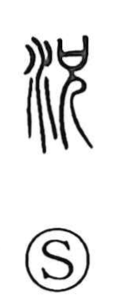

況

Uncategorized
Kun: iwanya, mashite | On: kyo
state ・ condition ・ situation
Explanation
A phono-semantic character built with 兄 as its phonetic core. The graph 兄, which supplies the reading kyo, originally portrayed the eldest son who presides over ancestral worship. In that ritual setting, the 祝 (hafuri), a shaman-priest, serves the deities and encounters them as they descend in response to prayer. The term shokyo evokes that entranced, ease-filled consciousness at the moment of divine descent, which became the model for jokyo, “state” or “situation.” In this way, 況 came to express the aspect or condition of things.